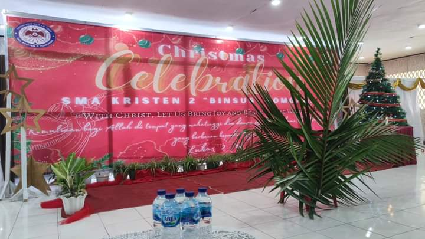

Struktur organisasi di SMA Kristen Binsus Tomohon mungkin mencakup beberapa elemen seperti:
Kepala Sekolah: Bertanggung jawab atas pengelolaan keseluruhan operasional sekolah, termasuk program pendidikan, keuangan, dan administrasi.
Wakil Kepala Sekolah: Mendukung kepala sekolah dalam tugas-tugasnya dan dapat memiliki tanggung jawab khusus, seperti koordinasi kurikulum, pembinaan siswa, atau manajemen staf.
Staf Pengajar: Guru-guru yang mengajar berbagai mata pelajaran di sekolah.
Staf Administrasi: Menangani tugas-tugas administratif, seperti pendaftaran siswa, manajemen keuangan, dan dokumentasi.
Dewan Guru: Terdiri dari para guru dan staf pendidikan lainnya yang berpartisipasi dalam pengambilan keputusan terkait kebijakan pendidikan dan perkembangan sekolah.
Dewan Komite Sekolah: Merupakan badan yang terdiri dari orang tua siswa, alumni, dan anggota masyarakat lainnya yang mendukung dan memberikan masukan kepada sekolah dalam hal kebijakan dan program-program pendidikan.
Bagian-bagian Pendukung Tambahan: Misalnya, departemen keuangan, keamanan, perpustakaan, dan fasilitas yang mendukung operasional sekolah.

Card title
Some quick example text to build on the card title and make up the bulk of the card's content.